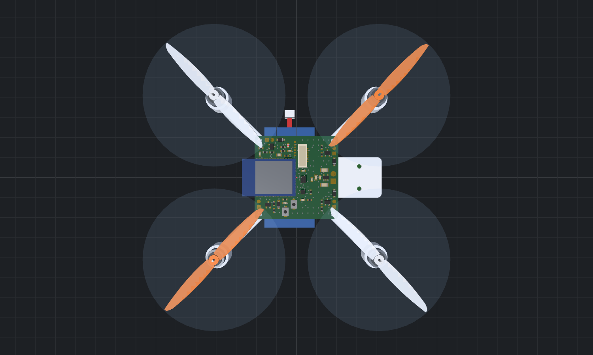
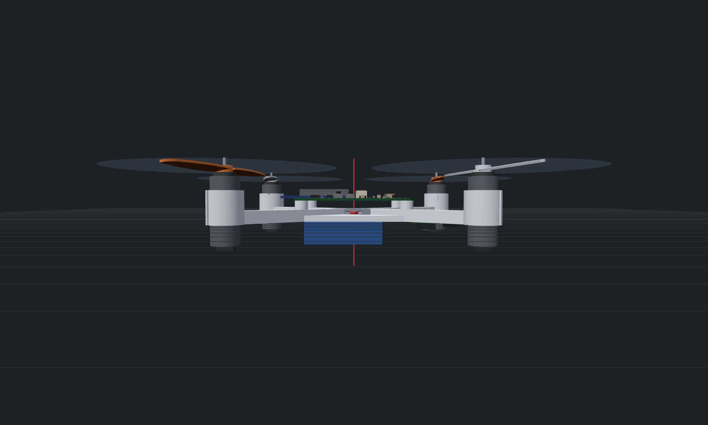
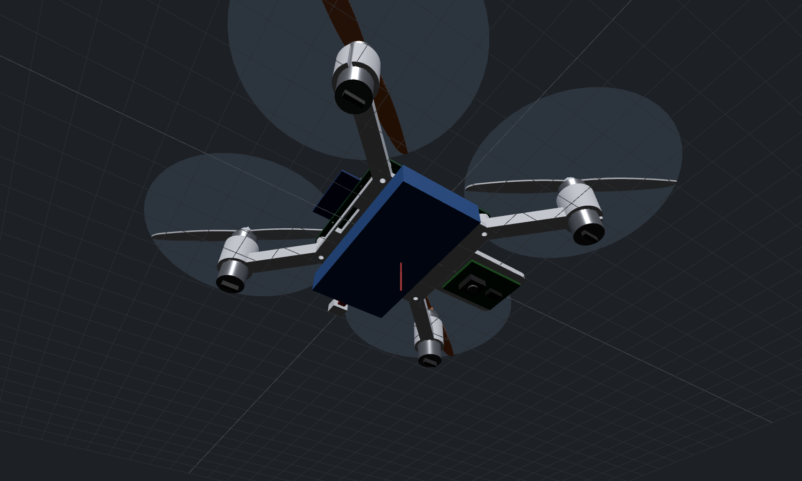
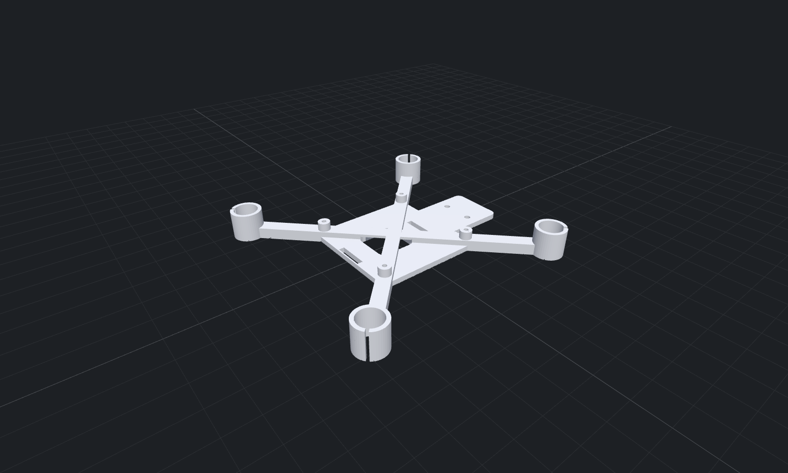

4 / 4
ゴール合格数
✔ 合格
段階判定
ゴール判定
| ID | ゴール | 合格基準 | 結果 | 判定 |
|---|---|---|---|---|
| G4-1 | 重心バランス | 重心と推力中心の水平ずれ < 2 mm | 0.001 mm（電池位置 x=-3.5 mm, y=0.0 mm で調整） | ✔ 合格 |
| G4-2 | プロペラ干渉 | プロペラ先端間 ≥ 5 mm かつ 直下構造物との垂直隙間 ≥ 5 mm | 先端間 10.0 mm、垂直 5.0 mm（最も近い: モータ固定チューブ上端） | ✔ 合格 |
| G4-3 | STL の健全性 | 閉じた多様体（境界辺・非多様体辺・向き不整合 0） | 境界 0、非多様体 0、向き 0（manifold-3d: NoError） | ✔ 合格 |
| G4-4 | 全備重量 | < 100 g（クラスA） | 56.6 g | ✔ 合格 |
設計内容
- 腕長 53.0 mm（隣接プロペラ間隙 10 mm から段階2で決定）、腕断面 5×4 mm、モータ固定は圧入チューブ（内径 8.3 mm＋クランプ用スリット）。
- 基板は M2 セルフタップで高さ 5 mm のスタンドオフに固定（裏面の THT パッドとの隙間確保）。無線モジュールのアンテナは基板後端から張り出し、下にフレーム材がない。
- 電池は下面に 10 mm 幅ストラップで固定。重心が推力中心に一致する電池位置を反復計算し、その位置に合わせてストラップ用スロットと軽量化穴を配置（設計変数を配置に反映）。
- フロー＋ToF モジュールは機首の延長部の下面に M2 で固定（床面を直視）。
- フレームは manifold-3d（Apache-2.0）で結合・穴あけし、閉じた多様体として STL 出力。
完成機体（3D）





フレーム STL: out/stage4/frame.stl（85.9 × 85.9 × 10.0 mm、3038 三角形）
重量・重心・慣性
| 部位 | 質量 [g] | 重心位置 x, y, z [mm] |
|---|---|---|
| フレーム（3D プリント） | 7.73 | 3.7, -0.0, 2.3 |
| モータ 1 | 5.00 | 37.5, -37.5, 4.0 |
| プロペラ 1 | 0.50 | 37.5, -37.5, 16.0 |
| モータ 2 | 5.00 | 37.5, 37.5, 4.0 |
| プロペラ 2 | 0.50 | 37.5, 37.5, 16.0 |
| モータ 3 | 5.00 | -37.5, 37.5, 4.0 |
| プロペラ 3 | 0.50 | -37.5, 37.5, 16.0 |
| モータ 4 | 5.00 | -37.5, -37.5, 4.0 |
| プロペラ 4 | 0.50 | -37.5, -37.5, 16.0 |
| 基板（FR-4＋銅箔） | 3.37 | 0.0, 0.0, 7.4 |
| フロー＋ToF モジュール | 2.00 | 31.0, 0.0, -2.0 |
| 配線・ねじ等 | 3.00 | 0.0, 0.0, 3.0 |
| 電池 | 15.00 | -3.5, 0.0, -3.5 |
| 基板上の部品（42 点） | 3.47 | 個別に位置を考慮 |
| 合計 | 56.57 | 重心 0.00, 0.00, 2.47 |
| 慣性テンソル（重心まわり）[kg m²] | x | y | z |
|---|---|---|---|
| x | 4.096e-5 | -4.272e-9 | 2.739e-7 |
| y | -4.272e-9 | 4.205e-5 | 2.546e-9 |
| z | 2.739e-7 | 2.546e-9 | 7.901e-5 |
段階1の参照機（65 g、Ixx=Iyy=4.0e-5、Izz=7.0e-5 kg m²）との比較は段階5で行う。
重心合わせの反復（試行の繰り返し）
| 反復 | 電池 x [mm] | 電池 y [mm] | 重心 x [mm] | 重心 y [mm] | 全備重量 [g] |
|---|---|---|---|---|---|
| 0 | 0.00 | 0.00 | 0.887 | -0.004 | 56.55 |
| 1 | -3.35 | 0.01 | 0.032 | -0.000 | 56.57 |
| 2 | -3.47 | 0.01 | 0.001 | 0.000 | 56.57 |
検証一覧
| 項目 | 値 | 基準 | 判定 | 備考 |
|---|---|---|---|---|
| 重心と推力中心の水平ずれ | 0.00 mm | < 2 mm | ✔ 合格 | 電池位置 x=-3.5 mm, y=0.0 mm で調整 |
| 隣接プロペラ先端の隙間 | 10.00 mm | ≥ 5 mm | ✔ 合格 | |
| プロペラ下面と直下の構造物の垂直隙間 | 5.00 mm | ≥ 5 mm | ✔ 合格 | 最も近い: モータ固定チューブ上端 |
| STL の閉じた多様体性（境界辺＋非多様体辺） | 0.00 本 | < 1 本 | ✔ 合格 | manifold-3d のブーリアン演算で生成 |
| 全備重量 | 56.57 g | < 100 g | ✔ 合格 | 100 g 未満＝模型航空機 |
| 腕の曲げ応力の安全率（最大推力） | 20.64 倍 | ≥ 3 倍 | ✔ 合格 | σ=1.21 MPa（PLA 許容 25 MPa） |
| 造形サイズ（最大辺） | 85.90 mm | < 180 mm | ✔ 合格 | 一般的な 3D プリンタのベッド 180 mm |
造形の目安
| 項目 | 推奨 |
|---|---|
| 材料 | PLA または PETG（墜落時の割れを嫌う場合は PETG / ナイロン系） |
| 向き | 底面（z=0）をベッドに置く。サポート不要（全形状が z=0 から上に立ち上がる） |
| 設定 | ノズル 0.4 mm、積層 0.2 mm、外周 2〜3 周、充填 30〜40 % |
| 後加工 | モータ圧入が固い場合はチューブ内径を 0.05 mm 刻みで調整（FRAME_DEFAULTS.tubeFit） |
懸念点・今後の課題
- 強度は腕付け根の片持ち梁の曲げのみで評価（静的）。墜落時の衝撃、層間剥離、振動（共振）は評価していない。初期試作は PETG を推奨。
- プロペラの一部が基板の角の上を通過する（垂直隙間 5.0 mm）。プロペラのたわみやモータの傾きで接触しないか実機で確認すること。
- モータ配線（腕に沿わせる）とストラップ、ねじ等の小物は「配線・ねじ等 3 g」として中心付近に一括計上している。
- 慣性テンソルは部品を直方体・円柱・点で近似したもの。実機では振子法などで Izz を測定して段階5の値を上書きすると精度が上がる。
- 電池の位置は ±1 mm 程度ずれても重心ずれは約 0.3 mm。個体差で重心がずれた場合はストラップ上で電池を前後させて合わせる。
参考にした OSS・資料
| 名称 | ライセンス | 利用方法 |
|---|---|---|
| manifold-3d | Apache-2.0 | フレームの多様体ブーリアン演算（依存として取り込み） |
| three.js | MIT | 3D 描画（依存として取り込み） |